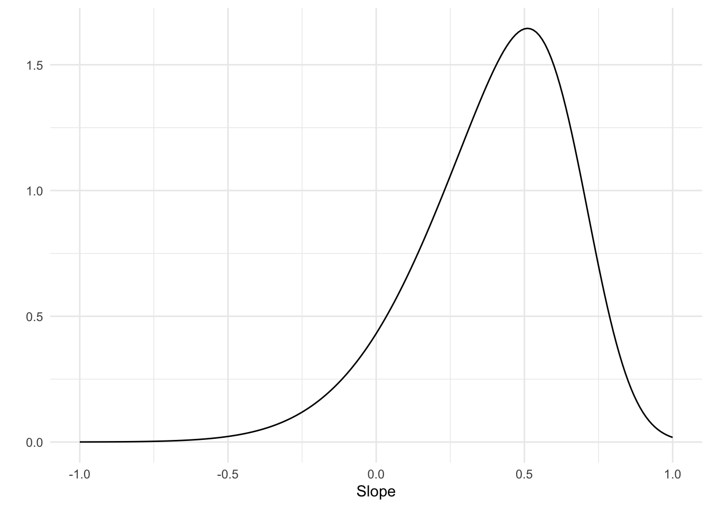
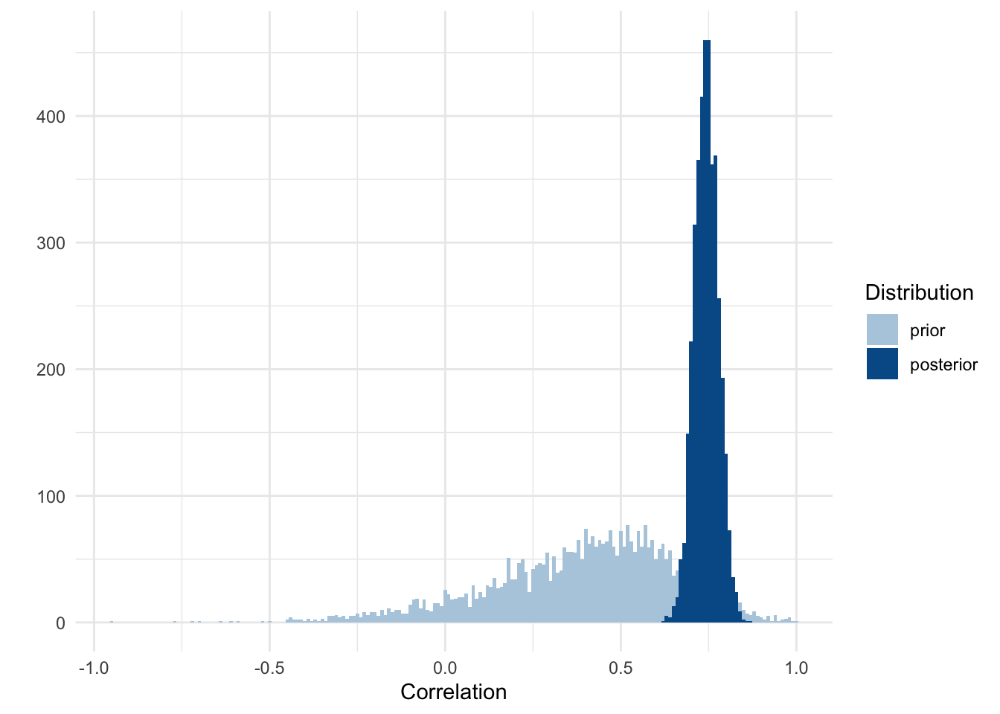
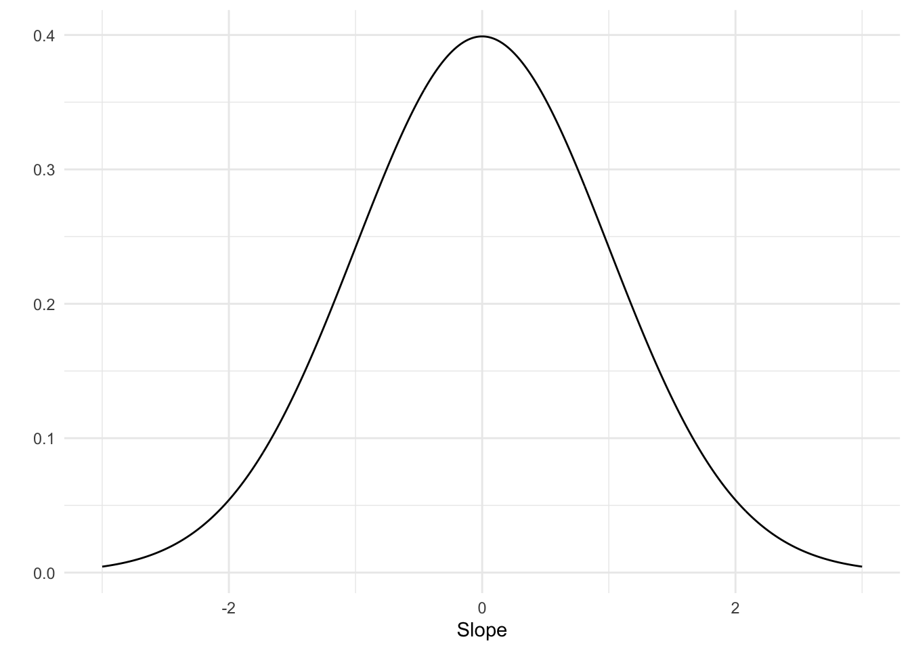

The third of a series of tutorial posts on Bayesian analyses. In this post I focus on using brms to model a correlation.
Published
February 12, 2023
In my previous blog post, I showed how to use brms and tidybayes to run a simple regression, i.e., a regression with a single predictor. This analysis required us to set three priors: an intercept prior, a sigma prior, and a slope prior. We can simplify this analysis by turning it into a correlational analysis. This will remove the intercept prior and lets us think about the prior for the slope in as a standardized effect size, i.e., the correlation.
To run a correlational analysis we’ll need to standardize the outcome and predictor variable, so in the code below I run the setup code as usual and also standardize both variables.
The formula for our model is slightly different compared to the formula of the previous single-predictor model and that’s because we can omit the intercept. By standardizing both the outcome and predictor variables, the intercept is guarenteed to be 0. The regression line always passes through the mean of the predictor and outcome variable. The mean of both is 0 because of the standardization and the intercept is the value the outcome takes when the predictor is 0. We could still include a prior for the intercept and set it to 0 (using constant(0)) but we can also simply tell brms not to estimate it. The formula syntax then becomes: height_z ~ 0 + weight_z.
Let’s confirm that this means we only need to set two priors.
Code
get_prior(height_z ~0+ weight_z, data = data)
prior
class
coef
group
resp
dpar
nlpar
lb
ub
source
b
default
b
weight_z
default
student_t(3, 0, 2.5)
sigma
0
default
Indeed, we’re left with a prior for \(\sigma\) and one for weight_z, which we can specify either via class b or the specific coefficient for weight_z.
Let’s also write down our model more explicitly, which is the same as the single predictor regression but without the intercept (\(\alpha\)). \[\displaylines{heights_i ∼ Normal(\mu_i, \sigma) \\ \mu_i = \beta x_i}\]
Setting the priors
Let’s start with the prior for the slope (\(\beta\)). A correlation takes a value that ranges from -1 to 1. If you know absolutely nothing about what kind of correlation to expect, you could set a uniform prior that assign equals probability to every value from -1 to -1. Alternatively, we could use a prior that describes a belief that no correlation is most likely, but with some probability that higher correlations are possible too. This could be done with a normal distribution centered around 0. In the case of this particular model, in which height is regressed onto weight, we can probably expect a sizeable positive correlation. So let’s use a skewed normal distribution that puts most of the probability on a positive correlation but is wide enough to allow for a range of correlations, including a negative one. brms has the skew_normal() function to specify a prior that’s a skewed normal distribution. I fiddled around with the numbers a bit and the distribution below is sort of what makes sense to me.
Code
prior <-tibble(r =seq(-1, 1, .01)) %>%mutate(prob =dskew_normal(r, xi = .7, omega = .4, alpha =-3) )ggplot(prior, aes(x = r, y = prob)) +geom_line() +labs(x ="Slope", y ="")

Prior distribution for the correlation
What should the prior for \(\sigma\) be? With the variables standardized, \(\sigma\) is limited to range from 0 to 1. If the predictor explains all the variance of the outcome variable, the residuals will be 0, meaning \(\sigma\) will be 0. If the predictor explains no variance, \(\sigma\) is equal to 1 because it will be similar to the standard deviation of the outcome variable, which is 1 because we’ve standardized it. Interestingly, this also means that the prior for \(\sigma\) is now dependent on the prior for the slope, because the slope is what determines how much variance is explained in the outcome variable. I don’t know exactly how to deal with this dependency, except to fear it and make sure to carefully inspect the output so that we don’t have any problems due to incompatible priors. One way to avoid it entirely is to use a uniform prior that assign equal plausibility to each value between 0 and 1, so let’s do that.
Running the model
With the priors ready, we can run the model.
Code
model <-brm( height_z ~0+ weight_z, data = data, family = gaussian,prior =c(prior(uniform(0, 1), class ="sigma", ub =1),prior(skew_normal(.7, .4, -3), class ="b", lb =-1, ub =1 ) ), sample_prior =TRUE,cores =4,seed =4,file ="models/model.rds")model
Family: gaussian
Links: mu = identity; sigma = identity
Formula: height_z ~ 0 + weight_z
Data: data (Number of observations: 352)
Draws: 4 chains, each with iter = 2000; warmup = 1000; thin = 1;
total post-warmup draws = 4000
Population-Level Effects:
Estimate Est.Error l-95% CI u-95% CI Rhat Bulk_ESS Tail_ESS
weight_z 0.75 0.03 0.68 0.81 1.00 2816 1902
Family Specific Parameters:
Estimate Est.Error l-95% CI u-95% CI Rhat Bulk_ESS Tail_ESS
sigma 0.66 0.02 0.61 0.71 1.00 2939 2107
Draws were sampled using sampling(NUTS). For each parameter, Bulk_ESS
and Tail_ESS are effective sample size measures, and Rhat is the potential
scale reduction factor on split chains (at convergence, Rhat = 1).
The output shows that the estimate for the slope, i.e., the correlation, is 0.75. This is just one number though. Let’s visualize the entire distribution, including the prior.
Code
draws <- model %>%gather_draws(prior_b, b_weight_z) %>%ungroup() %>%mutate(distribution =if_else(str_detect(.variable, "prior"), "prior", "posterior" ),distribution =fct_relevel(distribution, "prior") )ggplot(draws, aes(x = .value, fill = distribution)) +geom_histogram(position ="identity", alpha = .85) +labs(x ="Correlation", y ="", fill ="Distribution") +scale_fill_manual(values = colors)

It looks like we can update towards a higher correlation and also be more certain about it because the range of the posterior is much narrower than that of our prior.
What about sigma? Sigma is the standard deviation of the residuals, i.e., that what is unexplained by the predictor. We saw that the correlation between the predictor and outcome is 0.75. Squaring this number gives us the amount of variance explained (0.56), so if we subtract this from 1 we’re left with the variance that is unexplained (0.44). Squaring this number to bring it back to a standard deviations gives us 0.67, which matches the estimate for sigma that we saw in the output of brms.
Using a regularizing prior
In the previous section we used a personal and hopefully informed prior, at least to some degree. What would happen if we instead used a generic weakly informative prior? This is a prior centered at 0 with a standard deviation of 1.
Code
prior <-tibble(r =seq(-1, 1, .01)) %>%mutate(prob =dnorm(r, mean =0, sd =1) )ggplot(prior, aes(x = r, y = prob)) +geom_line() +labs(x ="Slope", y ="")

Generic weakly informationve prior for the correlation
It’s a very broad prior, ranging from -1 to 1. It is, however, centered at 0 so wouldn’t that push the final estimate closer to a null effect? Let’s see by running the model.
Code
model_generic_prior <-brm( height_z ~0+ weight_z, data = data, family = gaussian,prior =c(prior(uniform(0, 1), class ="sigma", ub =1),prior(normal(0, 1), class ="b", lb =-1, ub =1 ) ), sample_prior =TRUE,cores =4,seed =4,file ="models/model_generic_prior_z.rds")model_generic_prior
Family: gaussian
Links: mu = identity; sigma = identity
Formula: height_z ~ 0 + weight_z
Data: data (Number of observations: 352)
Draws: 4 chains, each with iter = 2000; warmup = 1000; thin = 1;
total post-warmup draws = 4000
Population-Level Effects:
Estimate Est.Error l-95% CI u-95% CI Rhat Bulk_ESS Tail_ESS
weight_z 0.76 0.04 0.69 0.82 1.00 2952 2120
Family Specific Parameters:
Estimate Est.Error l-95% CI u-95% CI Rhat Bulk_ESS Tail_ESS
sigma 0.66 0.03 0.61 0.71 1.00 2780 2000
Draws were sampled using sampling(NUTS). For each parameter, Bulk_ESS
and Tail_ESS are effective sample size measures, and Rhat is the potential
scale reduction factor on split chains (at convergence, Rhat = 1).
The previous estimate of the correlation was 0.75 and now it’s 0.76. Apparently the prior did not influence the final estimate. This hopefully alleviates some worries about priors always having a strong impact on the final results and it also shows you don’t always need to carefully construct a prior. Of course, in certain cases the prior will have a strong influence, for example when the prior is very strong or when there isn’t much data.
Multiple correlations
What if you want to test multiple correlations? There are two ways to do this, as far as I know. The first is to simply run separate models, each testing a single correlation. The second is by creating a model that tests multiple correlations at once. The latter is possible but it’s more complicated and I don’t fully understand it yet. If you want to see how it is done, please see this blog post by Solomon Kurz.
I’ll instead focus on simply running multiple models, but to make it easier I’ll show how to use the update() function in brms so we at least don’t have to write as much code. In the code below I standardize age and run three models in total, correlating height with weight, height with age, and age with weight. I’ll use the same generic prior from the last model and repeat the full code for that model, followed by two updates.
When I first ran the code above I received a warning that there were divergent transitions after warmup for the extra two correlations. That means the posterior may not have been sampled correctly, which is a problem. The solution is to increase the adapt_delta value. What that does is simply make the underlying sampler more conservative, which will increase the accuracy of approximating the posterior but might slow down the sampler.
The posterior distributions of the three correlations
Summary
Running a correlation in brms is the same as running a simple regression, except that the outcome and predictor are standardized. Because of the standardization, the intercept can be omitted, thus simplifying the model. The priors are also easier to set as the prior for the correlation ranges from -1 to and 1 and the prior for sigma from 0 to 1. You can use regularizing priors to let the data do most of the talking.
Source Code
---title: "Bayesian tutorial: Correlation"description: "The third of a series of tutorial posts on Bayesian analyses. In this post I focus on using `brms` to model a correlation."date: 2023-02-12categories: - statistics - tutorial - Bayesian statistics - regressioncode-fold: truecode-tools: truetoc: trueformat: html: df-print: kable---In my previous [blog post](../18-bayesian-tutorial-simple-regression/bayesian-tutorial-simple-regression.qmd), I showed how to use `brms` and `tidybayes` to run a simple regression, i.e., a regression with a single predictor. This analysis required us to set three priors: an intercept prior, a sigma prior, and a slope prior. We can simplify this analysis by turning it into a correlational analysis. This will remove the intercept prior and lets us think about the prior for the slope in as a standardized effect size, i.e., the correlation. To run a correlational analysis we'll need to standardize the outcome and predictor variable, so in the code below I run the setup code as usual and also standardize both variables.```{r}#| label: setup#| message: falselibrary(tidyverse)library(brms)library(tidybayes)data <-read_csv("Howell1.csv") |>filter(age >=18) |>mutate(height_z = (height -mean(height)) /sd(height),weight_z = (weight -mean(weight)) /sd(weight), )theme_set(theme_minimal())colors <-c("#93CFDB", "#1E466E")```The formula for our model is slightly different compared to the formula of the previous single-predictor model and that's because we can omit the intercept. By standardizing both the outcome and predictor variables, the intercept is guarenteed to be 0. The regression line always passes through the mean of the predictor and outcome variable. The mean of both is 0 because of the standardization and the intercept is the value the outcome takes when the predictor is 0. We could still include a prior for the intercept and set it to 0 (using `constant(0)`) but we can also simply tell `brms` not to estimate it. The formula syntax then becomes: `height_z ~ 0 + weight_z`.Let's confirm that this means we only need to set two priors.```{r}#| label: get-priorget_prior(height_z ~0+ weight_z, data = data)```Indeed, we're left with a prior for $\sigma$ and one for `weight_z`, which we can specify either via class `b` or the specific coefficient for `weight_z`. Let's also write down our model more explicitly, which is the same as the single predictor regression but without the intercept ($\alpha$).$$\displaylines{heights_i ∼ Normal(\mu_i, \sigma) \\ \mu_i = \beta x_i}$$## Setting the priorsLet's start with the prior for the slope ($\beta$). A correlation takes a value that ranges from -1 to 1. If you know absolutely nothing about what kind of correlation to expect, you could set a uniform prior that assign equals probability to every value from -1 to -1. Alternatively, we could use a prior that describes a belief that no correlation is most likely, but with some probability that higher correlations are possible too. This could be done with a normal distribution centered around 0. In the case of this particular model, in which height is regressed onto weight, we can probably expect a sizeable positive correlation. So let's use a skewed normal distribution that puts most of the probability on a positive correlation but is wide enough to allow for a range of correlations, including a negative one. `brms` has the `skew_normal()` function to specify a prior that's a skewed normal distribution. I fiddled around with the numbers a bit and the distribution below is sort of what makes sense to me.```{r}#| label: slope-prior#| fig-cap: Prior distribution for the correlationprior <-tibble(r =seq(-1, 1, .01)) %>%mutate(prob =dskew_normal(r, xi = .7, omega = .4, alpha =-3) )ggplot(prior, aes(x = r, y = prob)) +geom_line() +labs(x ="Slope", y ="")```What should the prior for $\sigma$ be? With the variables standardized, $\sigma$ is limited to range from 0 to 1. If the predictor explains all the variance of the outcome variable, the residuals will be 0, meaning $\sigma$ will be 0. If the predictor explains no variance, $\sigma$ is equal to 1 because it will be similar to the standard deviation of the outcome variable, which is 1 because we've standardized it. Interestingly, this also means that the prior for $\sigma$ is now dependent on the prior for the slope, because the slope is what determines how much variance is explained in the outcome variable. I don't know exactly how to deal with this dependency, except to fear it and make sure to carefully inspect the output so that we don't have any problems due to incompatible priors. One way to avoid it entirely is to use a uniform prior that assign equal plausibility to each value between 0 and 1, so let's do that.## Running the modelWith the priors ready, we can run the model.```{r}#| label: model-height-weight_zmodel <-brm( height_z ~0+ weight_z, data = data, family = gaussian,prior =c(prior(uniform(0, 1), class ="sigma", ub =1),prior(skew_normal(.7, .4, -3), class ="b", lb =-1, ub =1 ) ), sample_prior =TRUE,cores =4,seed =4,file ="models/model.rds")model```The output shows that the estimate for the slope, i.e., the correlation, is `r round(fixef(model)[1, 1], 2)`. This is just one number though. Let's visualize the entire distribution, including the prior.```{r}#| label: correlation#| message: falsedraws <- model %>%gather_draws(prior_b, b_weight_z) %>%ungroup() %>%mutate(distribution =if_else(str_detect(.variable, "prior"), "prior", "posterior" ),distribution =fct_relevel(distribution, "prior") )ggplot(draws, aes(x = .value, fill = distribution)) +geom_histogram(position ="identity", alpha = .85) +labs(x ="Correlation", y ="", fill ="Distribution") +scale_fill_manual(values = colors)```It looks like we can update towards a higher correlation and also be more certain about it because the range of the posterior is much narrower than that of our prior. What about sigma? Sigma is the standard deviation of the residuals, i.e., that what is unexplained by the predictor. We saw that the correlation between the predictor and outcome is `r round(fixef(model)[1, 1], 2)`. Squaring this number gives us the amount of variance explained (`r round(fixef(model)[1, 1]^2, 2)`), so if we subtract this from 1 we're left with the variance that is unexplained (`r round(1 - fixef(model)[1, 1]^2, 2)`). Squaring this number to bring it back to a standard deviations gives us `r round(sqrt(1 - fixef(model)[1, 1]^2), 2)`, which matches the estimate for sigma that we saw in the output of `brms`.## Using a regularizing priorIn the previous section we used a personal and hopefully informed prior, at least to some degree. What would happen if we instead used a [generic weakly informative prior](https://github.com/stan-dev/stan/wiki/Prior-Choice-Recommendations)? This is a prior centered at 0 with a standard deviation of 1. ```{r}#| label: weakly-informative-slope-prior#| fig-cap: Generic weakly informationve prior for the correlationprior <-tibble(r =seq(-1, 1, .01)) %>%mutate(prob =dnorm(r, mean =0, sd =1) )ggplot(prior, aes(x = r, y = prob)) +geom_line() +labs(x ="Slope", y ="")```It's a very broad prior, ranging from -1 to 1. It is, however, centered at 0 so wouldn't that push the final estimate closer to a null effect? Let's see by running the model.```{r}#| label: model-generic-priormodel_generic_prior <-brm( height_z ~0+ weight_z, data = data, family = gaussian,prior =c(prior(uniform(0, 1), class ="sigma", ub =1),prior(normal(0, 1), class ="b", lb =-1, ub =1 ) ), sample_prior =TRUE,cores =4,seed =4,file ="models/model_generic_prior_z.rds")model_generic_prior```The previous estimate of the correlation was `r round(fixef(model)[1, 1], 2)` and now it's `r round(fixef(model_generic_prior)[1, 1], 2)`. Apparently the prior did not influence the final estimate. This hopefully alleviates some worries about priors always having a strong impact on the final results and it also shows you don't always need to carefully construct a prior. Of course, in certain cases the prior will have a strong influence, for example when the prior is very strong or when there isn't much data.## Multiple correlationsWhat if you want to test multiple correlations? There are two ways to do this, as far as I know. The first is to simply run separate models, each testing a single correlation. The second is by creating a model that tests multiple correlations at once. The latter is possible but it's more complicated and I don't fully understand it yet. If you want to see how it is done, please see this [blog post](https://solomonkurz.netlify.app/blog/2019-02-16-bayesian-correlations-let-s-talk-options/) by Solomon Kurz.I'll instead focus on simply running multiple models, but to make it easier I'll show how to use the `update()` function in `brms` so we at least don't have to write as much code. In the code below I standardize `age` and run three models in total, correlating `height` with `weight`, `height` with `age`, and `age` with `weight`. I'll use the same generic prior from the last model and repeat the full code for that model, followed by two updates.```{r}#| label: more-correlationsdata <-mutate(data, age_z = (age -mean(age)) /sd(age))r_height_weight <-brm( height_z ~0+ weight_z, data = data, family = gaussian,prior =c(prior(uniform(0, 1), class ="sigma", ub =1),prior(normal(0, 1), class ="b", lb =-1, ub =1) ), cores =4,seed =4,file ="models/r_height_weight.rds",control =list(adapt_delta =0.9))r_height_age <-update( r_height_weight, height_z ~0+ age_z, newdata = data,file ="models/r_height_age.rds")r_weight_age <-update( r_height_weight, weight_z ~0+ age_z, newdata = data,file ="models/r_weight_age.rds")```When I first ran the code above I received a warning that there were divergent transitions after warmup for the extra two correlations. That means the posterior may not have been sampled correctly, which is a problem. The solution is to increase the `adapt_delta` value. What that does is simply make the underlying sampler more conservative, which will increase the accuracy of approximating the posterior but might slow down the sampler.The correlations are in the table below.```{r}#| label: correlations-table#| tbl-cap: The three correlations and their 95% HDI.bind_rows(as_tibble(fixef(r_height_weight)),as_tibble(fixef(r_height_age)),as_tibble(fixef(r_weight_age))) %>%mutate(pair =c("height - weight", "height - age", "weight - age"),.before = Estimate ) %>%select(-Est.Error) %>%rename(r = Estimate)```And in the graph below, to show their entire posterior distribution.```{r}#| label: correlations-plot#| fig-cap: The posterior distributions of the three correlationscorrelation_draws <-bind_rows( r_height_weight %>%spread_draws(b_weight_z) %>%rename(r = b_weight_z) %>%mutate(pair ="height - weight"), r_height_age %>%spread_draws(b_age_z) %>%rename(r = b_age_z) %>%mutate(pair ="height - age"), r_weight_age %>%spread_draws(b_age_z) %>%rename(r = b_age_z) %>%mutate(pair ="weight - age"))ggplot(correlation_draws, aes(x = r, y = pair)) +stat_halfeye() +labs(x ="Correlation", y ="")```## SummaryRunning a correlation in `brms` is the same as running a simple regression, except that the outcome and predictor are standardized. Because of the standardization, the intercept can be omitted, thus simplifying the model. The priors are also easier to set as the prior for the correlation ranges from -1 to and 1 and the prior for sigma from 0 to 1. You can use regularizing priors to let the data do most of the talking.